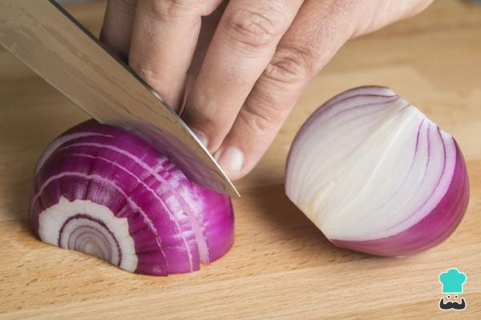

Primer plato: Ensalada mixta Primer plato: Ensalada mixta
Primer plato: Ensalada mixta Primer plato: Ensalada mixta Paso a Paso
Paso a PasoEl primer paso es hacer la vinagreta, donde mezclamos tres partes de aceite con una de vinagre y una pizca de sal en un bote que podamos cerrar y luego lo agitamos con energía hasta que se emulsione.

Después, cocemos el huevo —si no estuviera ya cocido— en abundante agua hirviendo durante 10 minutos y lo enfriamos después en agua con hielo. Pelamos y cortamos en rodajas. Cortamos también la cebolleta en aros y rallamos la zanahoria si no estuviera rallada.
En el bol que vayamos a servir la ensalada aliñamos la ensalada con parte de la vinagreta y luego añadimos el huevo duro, el maíz dulce, los espárragos escurridos, la ventresca en trozos y también escurrida, la zanahoria rallada, las aceitunas, la cebolleta y aliñamos con el resto de la vinagreta, procurando que todo quede bien sazonado.